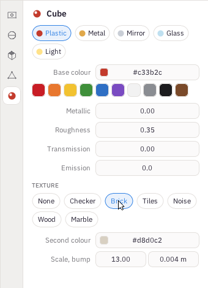

Previous: Moving, turning and sizing · Contents · Next: Light, the sky and the camera
4. Materials and textures
A material is what an object is made of: its colour, and how it treats light - whether it shines, reflects like a mirror, lets light through like glass, or glows. It is in the Material tab, the last one.
Starting points
Five chips at the top set every number at once, and keep the colour:
- Plastic - a colour under a thin shine. Most things are this: paint, wood, stone, fabric, skin.
- Metal - reflects everything, tinted by its colour: gold, copper, steel.
- Mirror - a perfect metal, sharp reflections.
- Glass - light passes through and bends.
- Light - glows: a bulb, a screen, a headlight.
Colour
Click one of the swatches under Base colour, or click the box and type a colour as the web writes them: six characters, two each for red, green and blue, from 0 to 9 and a to f. c81d25 is a red and 2f6fc4 a blue. The box shows it with a # in front, which you do not type.
The numbers
- Metallic - 0 for anything that is not metal, 1 for metal. In between is rarely right.
- Roughness - how sharp its reflections are: 0 is a polished surface, 1 is chalk. Car paint is about 0.1, a plastic toy 0.35, a brick wall 0.85.
- Transmission - 1 lets light through: glass and water. IOR then says how much it bends light: 1.33 for water, 1.5 for glass, 2.4 for diamond.
- Emission - how brightly it glows. Above 0 it shines with its own light, and lights what is around it.
Car paint is Plastic, not Metal: a colour under a clear shine. As a metal, a red car reflects the dark road and looks almost black.
Textures
Under Texture, a pattern over the whole surface. Cafesa3D works each pattern out from where a point is, so nothing needs to be wrapped around the object, and the pattern is in real metres whatever size the object is.
- Checker - squares in two colours.
- Brick - bricks and mortar, each brick its own shade. On a floor it becomes paving.
- Tiles - roof tiles, each row lapping over the one below.
- Noise - a soft random mottle: grass, asphalt, rubber, rough stone.
- Wood - the rings of a plank.
- Marble - veins through stone.
Choosing a pattern gives it starting numbers that look like the thing. Then:
- Second colour - the other colour of the pattern: the mortar, the dark in the noise, the rings of the wood.
- Scale - how many to a metre. Brick at 13 makes bricks about seven centimetres tall; noise at 28 is fine enough for asphalt.
- Bump - how deep the pattern is, in metres. Mortar is 0.004 - four millimetres - and the light rakes across it; roof tiles are about 0.02. Nought is a flat print.
Textures show in the Rendered view and in the picture F12 takes. The Solid view shows each object in its base colour.
None takes the texture away again.

The Material tab with Brick chosen: the second colour is the mortar, thirteen courses a metre, four millimetres deep.
Previous: Moving, turning and sizing · Contents · Next: Light, the sky and the camera